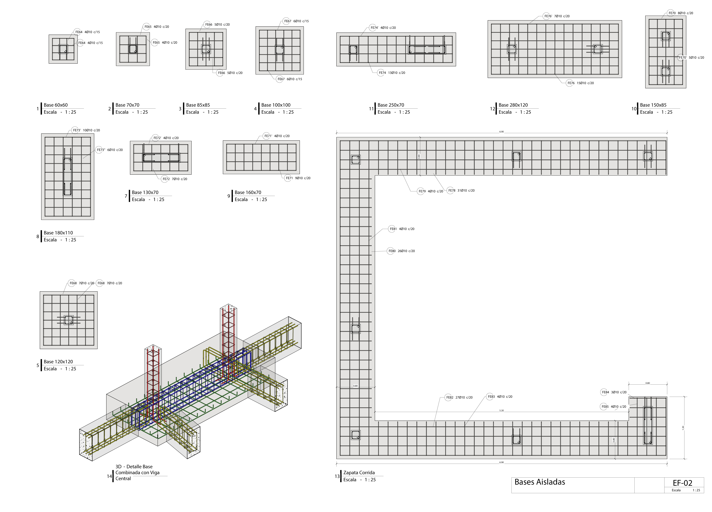

Foundation
The entire structure was calculated using the software RFEM 5 with non-linear models. Imperfection, wind, earthquake, and snow loads were included to a PΔ+pδ analysis with load steps. Besides, the bearing capacity of the soil was determined through a soil-structure interaction (SSI) analysis based on three soil studies and one SPT.
The foundation was designed with both isolated and combined bases, and braced beams.